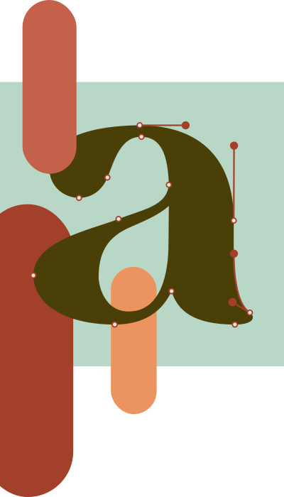

Добро пожаловать на imArtist!
Здесь собрана небольшая коллекция тренажеров для отработки творческих навыков.
В верхнем меню вы можете выбрать интересующее вас направление и увидеть,
какие упражнения доступны для тренировки. Благодаря этим заданиям вы обнаружите
свои сильные и слабые стороны. В последствии вы сможете подтянуть слабые и только
укрепить сильные.
Удачи!